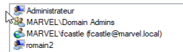

Turn on VMs :
- Windows Server 2016
- Windows 10 Enterprise 2
Windows Server 2016
(1) gpmc.msc
- - Group Policy management > Forest: marvel.local > Domains > marvel.local > Default Domain Policy > Right Click + Edit

- - Default Domain Policy [HYDRA.MARVEL.LOCAL] Policy > Computer Configuration > Policies > Windows Settings > Security Settings > Local Policies > Security Options

- - Microsoft network client: Digitally sign communications (always) : Disabled
- - Microsoft network client: Digitally sign communications (if server agrees) : Disabled
- - Microsoft network server: Digitally sign communications (always) : Disabled
- - Microsoft network server: Digitally sign communications (if client agrees) : Disabled
- > Properties > Define this policy setting > Disabled
-
(2) Add new user
- => See Part 8 / Building an AD Lab / Install / Windows Server 2016 Enterprise / Server configuration / Server manager
- - New Object - User :
- - First name : Peter
- - Last name : Parker
- - User logon name : pparker
- - Password : Password2
- - Password never expires : yes, all others : no
=> Reboot
Windows 10 Enterprise 2
(1) Create a 2nd VM with Windows 10 Enterprise
- => See Part 8 / Building an AD Lab / Install / Windows 10 Enterprise
- - Who's going to use this PC?
- - Name : romain2
- - Password : Ind2-gorillaz
 (2) Join the domain
(2) Join the domain
- => See Part 8 / Building an AD Lab / Install / Windows 10 Enterprise / User configuration
- - Rename PC : SPIDERMAN
- - Nom du domaine : marvel.local
- - User : pparker
- - Password : Password2
- - Ajouter un compte : nothing to do
- - User account : pparker
- - Account type : Standard User
=> Reboot
=> login as other user : MARVEL\Administrator, id : Ind1-gorillaz
(3) Make Frank Castle an admin
- => See Part 9 / SMB AD exploitation / Setting up environment / (2) Make the user a local admin :
- - MARVEL\fcastle (fcastle@marvel.local)
- 
(4) Create and Share Scans folder
- - CMD :
- - mkdir C:\Scans
- - File explorer :
- Right Click on C:\Scans > Properties > Sharing > Share- - Add Frank Castle
-
- - Permission Level : Read/Write

-
-

(5) Turn on all machines
- Power off all machines
- Set RAMs to 1024mo
- Turn on VMs :
- Windows Server 2016
- Windows 10 Enterprise, as Franck Castle
- Windows 10 Enterprise 2, as Administrator
(6) Deactivate Windows Defender and Firewall
- => See Part 9 / SMB AD exploitation / Setting up environment / (4) Turn off Windows Defender + (5) Firewalls :
- On both Windows 10 Enterprise and Windows 10 Enterprise 2 :
- - Turn off Windows Defender / Real-Time Protection
- - Turn off all Windows Firewalls